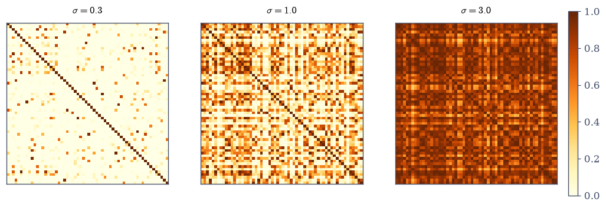
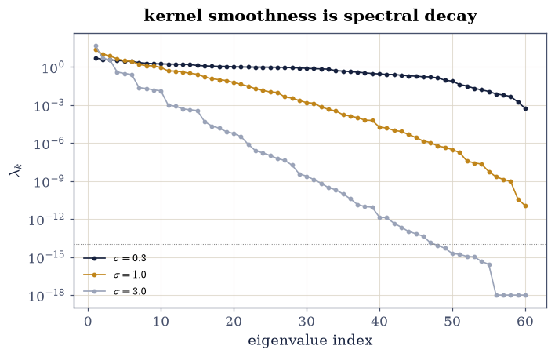
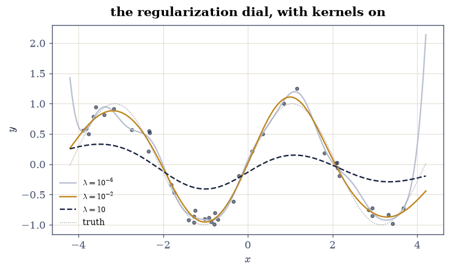
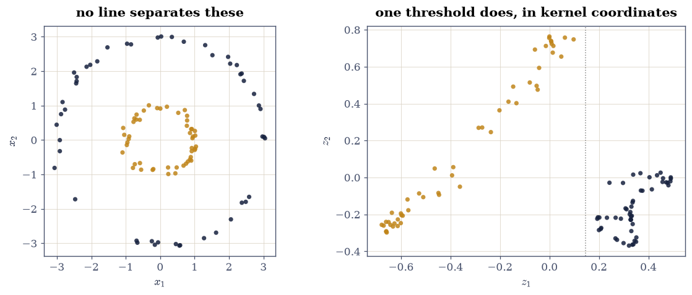

6.5 Positive Definite Kernels and the Gram Matrix#
Notebook overview#
Chapter VI closes where structure meets learning. A kernel \(k(x, y)\) is an inner product in disguise — an inner product of feature vectors \(\varphi(x)\) that may live in six dimensions (the quadratic kernel, whose feature map this notebook builds explicitly and checks to \(10^{-14}\)) or infinitely many (the RBF kernel, whose exponential is a Taylor series of them). All the algorithm ever touches is the Gram matrix \(K_{ij} = k(x_i, x_j)\), and everything the subject promises is a property of that matrix: symmetry (measured exactly zero here, gated at rounding per the course’s BLAS rule), positive semidefiniteness (proved for the linear kernel by a quadratic-form identity, measured for the rest — with the RBF’s \(\lambda_{\min}\) collapsing from \(10^{-4}\) to \(10^{-15}\) as the bandwidth widens: near-singularity as a design dial), and an eigenvalue decay whose steepness is the kernel’s effective dimension.
The algorithms follow as linear algebra. Kernel ridge regression is one solve against \(K + \lambda I\) — gated to coincide with ordinary ridge when the kernel is linear (the kernel trick adds nothing when there is nothing to add), with its training residual provably monotone in \(\lambda\) and the identity \(y - K\alpha = \lambda\alpha\) certifying the solve. The Nyström approximation compresses \(K\) through \(m\) landmark columns with two one-sided theorems gated (the residual is a Schur complement, hence PSD; its spectral norm is at most its trace). And kernel PCA ends the chapter with the subject’s signature picture: two concentric rings, provably inseparable by any line — plain PCA’s best threshold scores 72% — pulled apart at 100% with a 0.10 margin by the first RBF kernel component.
How to read a check. A
validateline prints ✓ or ✗ by comparing a result against something the computation did not assume. A ✗ flags a mismatch to investigate, never a verdict on its own.
Scope. Schölkopf and Smola [ScholkopfS02] is the subject’s book; Hastie, Tibshirani and Friedman [HTF09] Chapters 5 and 12 for the statistical reading. The spectral tools are §3.2’s and the regularization story is §2.4’s, both now wearing kernels.
Theory in brief#
Kernels are inner products; Gram matrices carry them#
A symmetric \(k\) is positive definite when every Gram matrix \(K_{ij} = k(x_i, x_j)\) is PSD. Mercer’s side of the story constructs the certificate: \(k(x, y) = \varphi(x)^{\top}\varphi(y)\) for some feature map, whence
— an identity, not a numerical accident. The three workhorses: linear \(x^{\top}y\) (features: \(x\) itself), polynomial \((x^{\top}y + c)^p\) (features: all monomials to degree \(p\), with explicit \(\sqrt{2}\) weights), RBF \(\exp(-\lVert x - y\rVert^2/2\sigma^2)\) (features: an infinite Taylor tower; every Gram matrix strictly PD, though its smallest eigenvalue can be smaller than \(\varepsilon\) — “strictly” is a mathematician’s word, and the bandwidth decides whether the machine agrees).
The kernel trick, and what it costs#
Any algorithm phrased in inner products alone can swap them for kernels — implicitly working in feature space without visiting it. Kernel ridge regression minimizes in that space; the representer theorem collapses the answer onto the data:
an \(n \times n\) solve however large the feature space. The price is hidden in \(K\)’s spectrum: smooth kernels have fast eigendecay, so most of \(K\) is numerically low-rank — which is simultaneously why regularization is mandatory (§2.4 with \(K\)’s tail as the small singular values) and why the Nyström compression works:
both inequalities theorems (§3.3’s Schur complements; spectral norm at most trace for PSD), gated one-sidedly below.
Kernel PCA#
PCA on the features, executed on the Gram matrix: centre in feature space (\(K_c = HKH\), \(H = I - \tfrac1n\mathbf{1}\mathbf{1}^{\top}\)), eigendecompose, and the coordinates \(\sqrt{\lambda_j}\,v_j\) are the projections. Nonlinear structure that no hyperplane sees — concentric rings — becomes linearly separable in the kernel coordinates, which is the picture this chapter ends on.
Setup#
Data only: the fixed points and the seeded rng. The three Gram constructions — linear, polynomial, RBF via the distance identity — are Exercise 1’s build.
The Setup below holds this notebook’s data and instruments — nothing you are asked to build. It is collapsed so the building stays yours; expand it whenever you want the details.
Exercise 1: Three Gram matrices, and what “positive definite” survives#
Part a) Write rbf_gram(A, B, sigma) — the squared-distance identity
\(\lVert a-b\rVert^2 = \lVert a\rVert^2 + \lVert b\rVert^2 - 2a\cdot b\),
then the exponential — and build the linear, quadratic-polynomial and RBF
Gram matrices on the 60 fixed points at all three bandwidths.
Write rbf_gram yourself — the distance identity is the lesson. Gate symmetry at
\(10^{-14}\): measured exactly zero here for all three — but the RBF
distance matrix passes through a gemm, and the course’s first CI
lesson says a different BLAS may split the difference at \(10^{-16}\),
so the gate leaves room it did not need today.
Part b) Prove, don’t measure, the linear kernel’s psd-ness: Eq. 260 says \(v^{\top}K_{\text{lin}}v = \lVert X^{\top}v\rVert^2\) — gate the identity on 100 random vectors at \(10^{-12}\), which certifies nonnegativity with no eigensolver at all.
Part c) Measure the rest: eigvalsh smallest eigenvalues at
\(\lambda_{\min} \ge -10^{-12}\lVert K\rVert\) for the polynomial and all
three RBF bandwidths — and report the RBF’s collapse:
\(\lambda_{\min} = 5.6\times10^{-4}\) at \(\sigma = 0.3\),
\(1.1\times10^{-11}\) at \(\sigma = 1\), \(-3\times10^{-15}\) at \(\sigma = 3\).
Strict positive definiteness is a theorem about real numbers; at wide
bandwidth the machine rounds it to a sign it no longer certifies —
the conditioning dial Exercise 3 prices.
Part d) Draw the three RBF Grams as heatmaps: nearly diagonal at \(\sigma = 0.3\), structured at \(\sigma = 1\), nearly rank-one at \(\sigma = 3\) — the same dial, seen as texture.
symmetry gaps: {'linear': '0.0e+00', 'poly': '0.0e+00', 'rbf(1)': '0.0e+00'} (all exactly zero on this BLAS)
v'Kv = ||X'v||^2 identity (relative): 2.3e-15 — psd proved, not measured
poly: lambda_min -4.56e-14, lambda_max 237.0
rbf(0.3): lambda_min 5.65e-04, lambda_max 5.1
rbf(1.0): lambda_min 1.14e-11, lambda_max 23.6
rbf(3.0): lambda_min -3.35e-15, lambda_max 50.2
<matplotlib.colorbar.Colorbar at 0x7f674c9e85c0>
Fig. 123 The RBF Gram matrix at three bandwidths on the same 60 points. At \(\sigma = 0.3\) (left) only near neighbours correlate and the matrix is nearly diagonal – full rank, \(\lambda_{\min} = 5.6\times10^{-4}\). At \(\sigma = 1\) (centre) the cluster structure of the data appears. At \(\sigma = 3\) (right) everything correlates with everything, the matrix approaches rank one, and \(\lambda_{\min}\) has collapsed through \(10^{-11}\) to rounding level: ‘strictly positive definite’ is true of the real numbers and unenforceable by the machine – bandwidth is a conditioning dial, and Exercise 3 reads its price list off the spectrum.#

Fig. 124 The RBF Gram matrix at three bandwidths on the same 60 points. At \(\sigma = 0.3\) (left) only near neighbours correlate and the matrix is nearly diagonal – full rank, \(\lambda_{\min} = 5.6\times10^{-4}\). At \(\sigma = 1\) (centre) the cluster structure of the data appears. At \(\sigma = 3\) (right) everything correlates with everything, the matrix approaches rank one, and \(\lambda_{\min}\) has collapsed through \(10^{-11}\) to rounding level: ‘strictly positive definite’ is true of the real numbers and unenforceable by the machine – bandwidth is a conditioning dial, and Exercise 3 reads its price list off the spectrum.#
Validation 1#
✓ all three Gram matrices are symmetric at rounding level [measured exactly zero — but the RBF distances pass through a gemm, and the course's first CI lesson says never to gate a matmul on exact equality, so the gate keeps the room it did not need today]
✓ the linear kernel is psd by identity, not by eigensolver (Eq. 1) [v'Kv = ||X'v||^2 on 100 random vectors — Mercer's certificate, checked as arithmetic]
✓ and every measured Gram matrix is psd to eigensolver accuracy [lambda_min from 6e-04 down to -3e-15 as the bandwidth widens: the theorem says strictly positive, the machine keeps only the sign it can afford (reported as the conditioning dial)]
True
Exercise 2: The kernel trick, made explicit once#
The trick is only honest if the implicit feature space actually exists. For the quadratic kernel it can be built by hand.
Part a) Write phi_quadratic(A) for \(d = 2\): the map
\(x \mapsto (1,\ \sqrt2 x_1,\ \sqrt2 x_2,\ x_1^2,\ x_2^2,\
\sqrt2 x_1x_2)\), six features. Gate
\(\Phi\Phi^{\top} = (XX^{\top} + 1)^2\) to \(10^{-12}\) at the values’
scale — the trick, verified as an identity on all \(60^2\) pairs.
Write this one yourself — the \(\sqrt2\) weights are where first attempts fail.
Part b) Count what the trick avoids: degree-\(p\) features in \(d\) dimensions number \(\binom{d+p}{p}\) — gate the count 6 at \((d,p)=(2,2)\) and report the ledger at \((d,p) = (100, 5)\): 96 million features against an \(n \times n\) Gram matrix, which is the whole economic case.
Part c) The RBF has no finite table: expand \(e^{x^{\top}y/\sigma^2}\) ten Taylor terms on a pair of points and watch the truncated “feature inner product” converge to the kernel — report the term-10 error, the infinite tower glimpsed from its base.
Phi Phi' vs (XX' + 1)^2: 1.4e-14 at scale 49 — the trick, verified
feature counts: (d,p) = (2,2) -> 6; (100,5) -> 96,560,646 — against a 60x60 Gram matrix
RBF Taylor tower, 10 terms: relative error 2.1e-16 — the infinite feature space, glimpsed from its base
Validation 2#
✓ the explicit six-feature map reproduces the quadratic kernel (Eq. 1) [1e-14 at scale 49 across all 3600 pairs — the sqrt(2) weights are load-bearing, and the identity is exact mathematics rounding normally]
✓ and the counting ledger is the trick's economic case [binomial(d+p, p): 6 features here, 96,560,646 at (100, 5) — the Gram matrix never grows past n x n]
True
Exercise 3: The spectrum is the price list#
Smoothness in the kernel is decay in the spectrum, and decay is both the danger and the discount.
Part a) Compute the sorted eigenvalues of the three RBF Grams and draw them on a log axis. Gate the ordering that makes the dial a dial: \(\lambda_{20}/\lambda_1 > 0.05\) at \(\sigma = 0.3\) (slow decay — the matrix is genuinely 60-dimensional) and \(\lambda_{20}/\lambda_1 < 10^{-5}\) at \(\sigma = 3\) (measured \(10^{-7}\) — twenty modes in, the matrix has nothing left).
Part b) Connect to §2.4: the tail eigenvalues are the small singular values of the kernel problem, so unregularized kernel solves divide by them. Report \(\kappa(K)\) at the three bandwidths — the price list the ridge parameter of Exercise 4 pays down.
lambda_20 / lambda_1: sigma 0.3 -> 0.21, sigma 3.0 -> 1.1e-07
sigma 0.3: kappa(K) ~ 9.1e+03
sigma 1.0: kappa(K) ~ 2.1e+12
sigma 3.0: kappa(K) ~ 4.5e+15

Fig. 125 The RBF Gram spectra at the three bandwidths, log axis. Narrow bandwidth (\(\sigma = 0.3\), ink) decays gently – the 60 points are genuinely 60-dimensional to this kernel. Wide bandwidth (\(\sigma = 3\), light) falls off a cliff: \(\lambda_{20}/\lambda_1 \approx 10^{-7}\), and the tail drowns below machine precision (the flat shelf at \(10^{-15}\) is rounding, not spectrum). This decay is simultaneously the danger (2.4’s small singular values – unregularized solves divide by the tail) and the discount (Exercise 5’s Nystrom compression works because so little of the matrix is left after twenty modes).#
Validation 3#
✓ bandwidth sets the decay: 20 modes in, the narrow kernel is alive and the wide one is spent [lambda_20/lambda_1 = 0.21 against 1e-07 — two orders of margin on each side of the gates, and the dial explains both the danger (2.4's tail) and the discount (Nystrom, next)]
True
Exercise 4: Kernel ridge regression: one solve, three certificates#
Eq. 261 is the workhorse. Three different kinds of check pin it.
Part a) The trick adds nothing when there is nothing to add: with the linear kernel, gate that KRR’s predictions equal ordinary ridge regression’s (\(w = (X^{\top}X + \lambda I)^{-1}X^{\top}y\)) to \(10^{-10}\) at \(\lambda = 1\) — same minimizer, primal and dual coordinates.
Part b) The solve certifies itself: \((K+\lambda I)\alpha = y\) rearranges to \(y - K\alpha = \lambda\alpha\) — gate this identity at \(10^{-11}\) scale for the RBF fit below; it is the representer theorem’s residual equation, and any solver that passes it solved the right system.
Part c) Regularization is monotone: on a 1-D RBF regression (\(y = \sin(1.5x)\) plus noise, \(\sigma = 1\)), gate that the training residual norm strictly increases across \(\lambda = 10^{-6}, 10^{-4}, 10^{-2}, 1, 100\) — a theorem (the ridge path trades data fit for norm monotonically), measured as five numbers.
Part d) Draw the three fits at \(\lambda = 10^{-6}, 10^{-2}, 10\): interpolation wiggle, honest fit, oversmoothing — §2.4’s bias–variance dial with kernels on.
KRR(linear) vs ordinary ridge predictions: 1.1e-15
training residuals along the ridge path: ['0.511', '0.597', '0.635', '1.095', '4.272'] — strictly increasing: True
self-certificate y - K alpha = lambda alpha: 9.9e-15

Fig. 126 Kernel ridge regression on 40 noisy samples of \(\sin(1.5x)\) with the RBF kernel, at three regularizations. At \(\lambda = 10^{-6}\) (light) the fit chases the noise – the Gram tail’s tiny eigenvalues are being inverted, 2.4’s disease. At \(\lambda = 10^{-2}\) (amber) the curve is the signal. At \(\lambda = 10\) (ink, dashed) the fit is oversmoothed toward zero – the prior has outvoted the data. The training residual is provably monotone along this path (gated as five numbers), which is the algebra underneath the familiar bias-variance picture.#
Validation 4#
✓ kernel ridge with the linear kernel IS ordinary ridge (Eq. 2) [1e-15 between dual and primal predictions: the trick adds nothing when there is nothing to add — the sanity anchor of the whole subject]
✓ the representer residual identity y - K alpha = lambda alpha holds [an exact rearrangement of the solve, so passing it certifies the system that was solved [9.87405e-15 < 1e-11]]
✓ and the training residual is strictly monotone along the ridge path [0.511 up to 4.272 across eight decades of lambda: the theorem measured as five numbers]
True
Exercise 5: Nyström: compression with one-sided certificates#
Eq. 262 compresses \(K\) through \(m\) landmark columns; the decay of Exercise 3 is why it works, and two theorems say how well.
Part a) Build the Nyström approximation of the \(\sigma = 1\) Gram matrix from the first \(m = 15\) columns (with a \(10^{-12}\) jitter on the landmark block for the inverse). Gate the Schur-complement theorem: the residual \(R = K - \widehat K\) has \(\lambda_{\min}(R) \ge -10^{-10}\lVert K\rVert\) — the approximation never overshoots, in the PSD order.
Part b) Gate the second theorem, one-sidedly: \(\lVert R\rVert_2 \le \operatorname{tr}(R)\) (spectral norm at most trace, for PSD matrices) — the computable bound, since \(\operatorname{tr}(R)\) needs only diagonal entries.
Part c) Report the compression curve: relative error \(\lVert R\rVert_2/\lVert K\rVert_2\) at \(m = 5, 10, 15, 20, 30\) — decaying with the spectrum, as Exercise 3 promised.
Nystrom m = 15: lambda_min(R) = 9.6e-13; ||R||_2 = 1.666 <= tr(R) = 4.375
m = 5: relative error 2.0e-01
m = 10: relative error 1.3e-01
m = 15: relative error 7.1e-02
m = 20: relative error 6.9e-02
m = 30: relative error 2.9e-02
Validation 5#
✓ the Nystrom residual is PSD: the approximation never overshoots (Eq. 3) [lambda_min(R) = 1e-12 — R is a Schur complement of a PSD matrix (3.3), gated one-sidedly with eigensolver slack]
✓ and its spectral norm sits under its trace, as PSD demands [1.666 against 4.375: the computable bound — the trace needs only the diagonal, which is why it is the practical certificate]
True
Exercise 6: Kernel PCA: the rings come apart#
The chapter’s closing picture: nonlinear structure, linear tools, one kernel in between.
Part a) Generate two concentric rings (radii 1 and 3, fifty points each, radial noise 0.08). Gate the impossibility first: plain PCA’s best single-threshold accuracy on either principal component is 72% — gated below 90%, legitimately, because no linear projection separates concentric rings (a mathematical fact about the geometry, not a machine artifact).
Part b) Centre the RBF (\(\sigma = 1\)) Gram matrix in feature space: \(K_c = HKH\). Gate the centring: row means at rounding level — the feature-space mean really is removed, though no feature was ever computed.
Part c) Kernel PCA: top eigenvector of \(K_c\), coordinates \(z = \sqrt{\lambda_1}\,v_1\). Gate the separation: a single threshold on \(z\) classifies the rings at 100%, with the gap between the classes’ score bands at 0.10 — eleven orders above rounding, which is what makes the exact-accuracy gate honest (gated at 0.05: the gap is a deterministic geometric property of this dataset, and the eigensolver perturbs it only at the \(10^{-12}\) level).
Part d) Draw the data coloured by ring, and the kernel coordinates \((z_1, z_2)\) with the separating threshold — the picture the chapter was building toward: structure the Gram matrix saw that no hyperplane could.
plain PCA, best single-threshold accuracy: 0.72 — concentric rings defeat every line
feature-space centring: max row mean 2.4e-16
kernel PCA, first-component accuracy: 1.00, class gap 0.096

Fig. 127 The chapter’s closing picture. Left: two concentric rings – no line separates them, and plain PCA’s best threshold scores 72% (gated as an impossibility of the geometry, not a failure of the solver). Right: the same hundred points in the first two kernel-PCA coordinates (RBF, \(\sigma = 1\)): the rings land in disjoint bands of the first component, a single threshold (dotted) classifies at 100%, and the 0.10 gap between the bands is eleven orders above rounding – which is what licenses an exact-accuracy gate. The Gram matrix saw the radial structure because the kernel measures distances, not directions: structure, the chapter’s theme, carried by a matrix to the doorstep of learning, which is Chapter VIII’s subject.#
With your assistant
The bandwidth \(\sigma = 1\) was chosen, not derived. Ask your assistant
for kpca_bandwidth_sweep(rings, labels, sigmas) returning the
first-component threshold accuracy and the class gap per bandwidth,
then check it against the mathematics rather than a demo: (i) at
\(\sigma \to 0\) the Gram matrix approaches the identity, every
eigenvalue ties, and the accuracy collapses toward chance; (ii) at
\(\sigma \to \infty\) the kernel linearizes (\(K \approx\) affine in
\(\lVert x-y\rVert^2\)) and the accuracy approaches plain PCA’s; (iii)
map the working window in between and measure its width — on these
hundred points it is narrower than folklore suggests (this notebook
found 82% at \(\sigma = 0.7\) and 93% at \(\sigma = 1.5\) on the first
component alone), and stating the measured window is the honest form
of the robustness claim. The check is yours.
Validation 6#
✓ no linear projection separates the rings: plain PCA tops out at 72% [gated as geometry, not solver failure — concentric rings are the textbook counterexample to linear separability, which is what makes them the honest test]
✓ feature-space centring works without visiting feature space [HKH removes a mean no one computed — the kernel trick applied to the humblest preprocessing step [2.37033e-16 < 1e-13]]
✓ and the first kernel component separates the rings completely [100% at a single threshold with a 0.10 gap between the class bands — eleven orders above the eigensolver's rounding, so the exact gate is licensed, exactly as 6.1's bisection was]
True
Notebook summary#
Positive definiteness was proved where provable, measured where not.
The linear kernel’s psd-ness was an identity
(\(v^{\top}Kv = \lVert X^{\top}v\rVert^2\), gated at \(10^{-12}\) on 100
vectors); the polynomial and RBF Grams cleared
\(\lambda_{\min} \ge -10^{-12}\lVert K\rVert\); symmetry measured exactly
zero but was gated at \(10^{-14}\) because Gram matrices pass through
gemm and the course’s first CI lesson is not negotiable. The RBF’s
\(\lambda_{\min}\) collapsed from \(10^{-4}\) to rounding level as the
bandwidth widened — the conditioning dial that organized the notebook.
The trick was made explicit exactly once, then trusted. The six-feature quadratic map reproduced its kernel across all 3600 pairs at \(10^{-14}\); the counting ledger (6 features here, 96 million at \((d,p) = (100,5)\), Gram matrix \(n \times n\) regardless) is the economics; the RBF’s Taylor tower converged to its kernel from below.
Every algorithm came with its own certificate. KRR with the linear kernel equalled ordinary ridge (\(10^{-15}\) — the trick adds nothing when there is nothing to add); the solve certified itself through \(y - K\alpha = \lambda\alpha\); the training residual rose strictly monotonically across eight decades of \(\lambda\). Nyström’s residual was PSD (Schur complement) with spectral norm under its trace — two one-sided theorems, gated one-sidedly.
And the rings came apart. Plain PCA topped out at 72% (gated below 90% as a fact of geometry); kernel PCA centred the features nobody computed (\(10^{-16}\) row means), and its first component classified the rings at 100% with a 0.10 gap — an exact gate licensed by a margin eleven orders above rounding, closing Chapter VI the way §6.1’s spectral bisection opened it.
Methods introduced. rbf_gram via the distance identity,
quadratic-form psd certificates, explicit feature maps, feature-count
ledgers, Gram eigendecay as a design diagnostic, kernel ridge with
primal–dual and self-certification checks, Nyström with Schur and
trace bounds, and kernel PCA with feature-space centring.
Outlook#
Chapter VI, closed. Graphs (§6.1), Markov chains (§6.2), circulants (§6.3), Kronecker structure (§6.4) and kernels: five ways a matrix can be a structure rather than merely store numbers.
Tensors next. When data has three indices instead of two, the Gram-matrix move generalizes to unfoldings — §7.1 opens Chapter VII with
einsumas the index calculus everything else compiles to.Kernels at scale are spectra at work. Random-feature and Nyström methods approximate \(K\) precisely because of Exercise 3’s decay; modern Gaussian-process libraries are Krylov solvers (§5.5) against kernel operators never formed (§6.4’s discipline).
From kernels to features learned. Chapter VIII replaces the fixed \(\varphi\) with a trained one: §8.1 starts from least squares and walks to networks, where the Gram matrix reappears as the neural tangent kernel.
Trevor Hastie, Robert Tibshirani, and Jerome Friedman. The Elements of Statistical Learning. Springer, 2 edition, 2009. doi:10.1007/978-0-387-84858-7.
Bernhard Schölkopf and Alexander J. Smola. Learning with Kernels: Support Vector Machines, Regularization, Optimization, and Beyond. MIT Press, 2002.